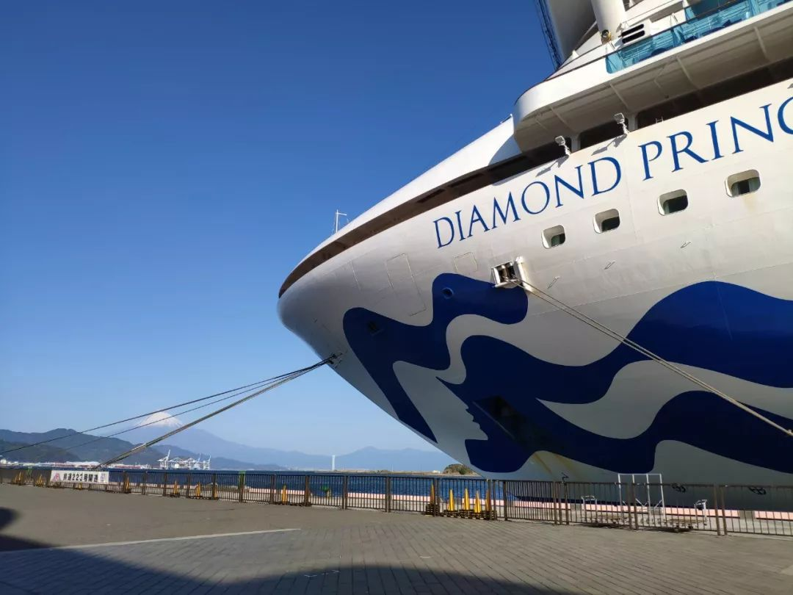
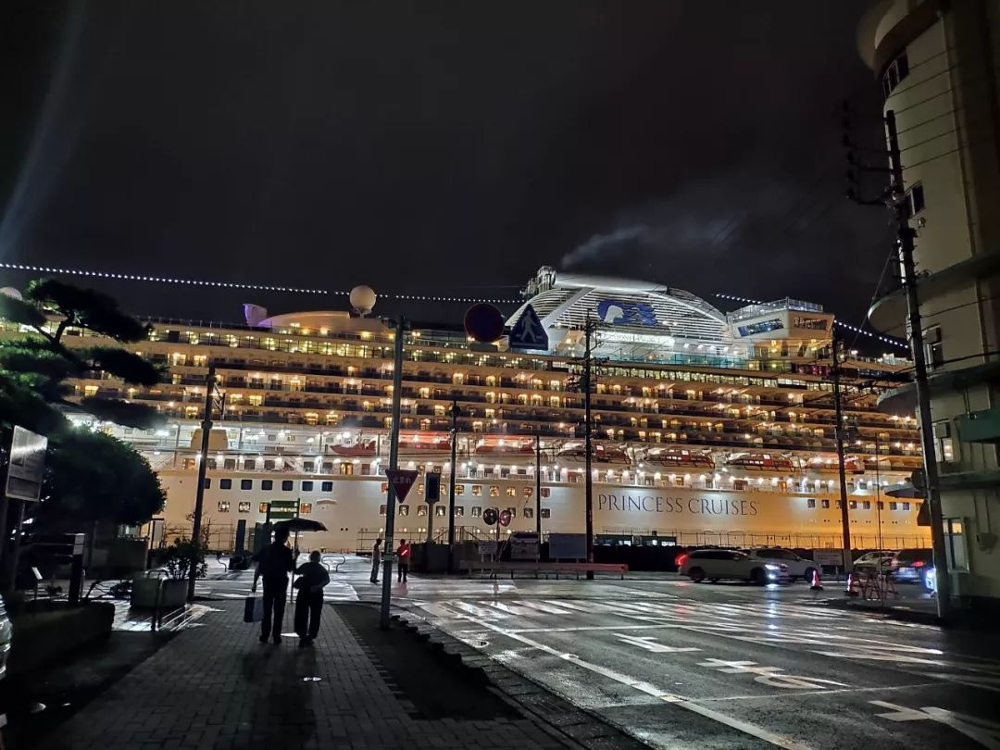
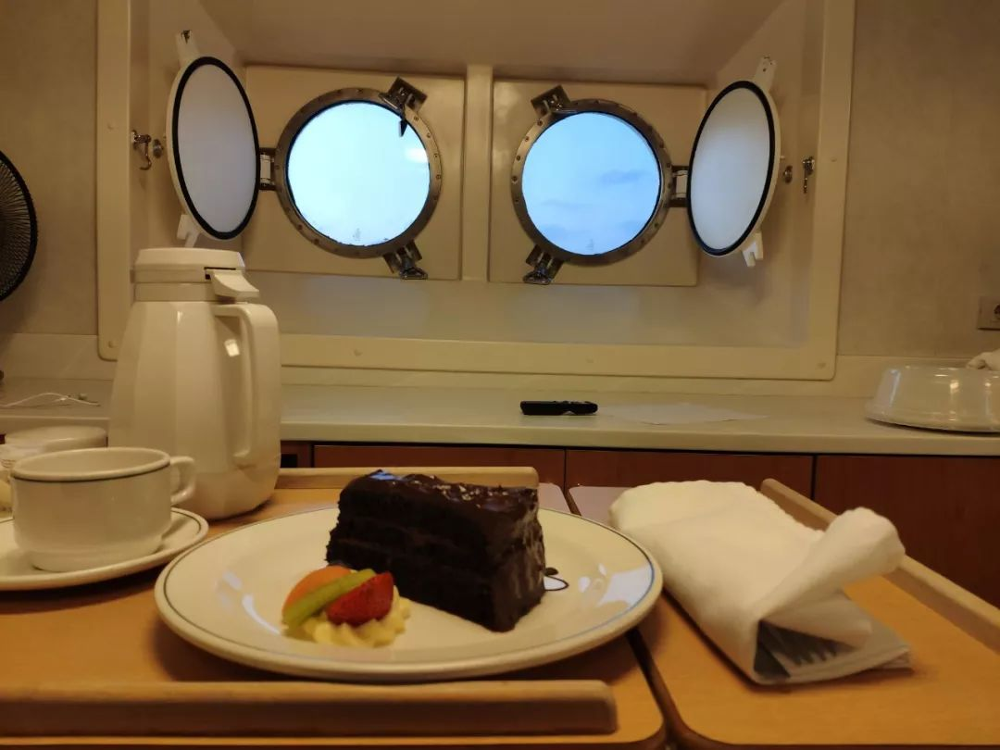

3711人被海上隔离，“钻石公主号”遭遇了什么？
原文链接 备份链接 作者：郭儒逸 来源：*商业人物*（ID：*****biz-leaders）* 壹 2月14日，情人节。 这是Yardley Wong在“钻石公主号”上隔离的第十天。前一天傍晚，她预定了一瓶红酒由船员送到房间，然后在推 …
以下文章来源于私家地理 ，作者私家地理
[
私家地理
点亮旅行灵感，始于2005——澎湃新闻出品](#)
澎湃新闻记者 王昱
Imy不知道是否该庆幸自己的“幸运”。
2月5日，当全球的视线都聚焦在这艘停靠在横滨港口的邮轮时，Imy的心情十分复杂——她知道如果没有下船，自己本应该也在这艘船上。
然而，出于个人的一些原因，她提前结束了工作，赶在春节前回到了家。但万万没想到，伴随着国内疫情汹涌的变化，那艘她不久前刚呆过的邮轮也被这场“浩劫”吞没了。
2月17日，在横滨港口，钻石公主号已在此停泊了近两周。截止到昨天，钻石公主号上累计确诊人数为454人，多国已开始派专机接送滞留人员归国。 小森角度 视频(00:56)
日本厚生劳动省18日发布消息称，“钻石公主”号游轮上人员的新冠病毒检查结果显示，新增88人呈阳性。其中65人未出现发烧及咳嗽等症状。目前总感染确诊人数已增至562人。
Imy在朋友圈里写到：“这是我工作的过的邮轮，第一艘。没有想到竟然是在这种情况下介绍给我爸。”
不仅是Imy，谁都没有想到这艘服役了近17年的豪华游轮如今披上了“恐怖游轮”的称号。来自英国的乘客David Abel为了庆祝50周年的结婚纪念日，与妻子登上了邮轮，正享受着一场属于两个人的浪漫；来自中国台湾地区的人气魔术师陈日昇受邀上船，正愉悦地进行着2020年的第一场旅行演出；来自中国香港地区的黄雅曦带着一家七口人于大年初一出发，正幸福地在海上庆祝新年。
然而谁都没想到，当邮轮驶入横滨的港口，这艘邮轮在接下来的十几天里，会成为3700人的 “海上监狱”。
而与David等人不同，Imy不是船上的乘客，她是钻石公主号上一千多名员工中的一位。她和她的同事们在海上看过无数个日出与日落，比任何一位客人都了解这艘船，比任何一个人都熟悉海上的风波。如今看着每天“疯长”的确诊数字，Imy的心情是沉重的，这些数字里也包括与她一起辛勤工作的同事。
据钻石公主号官网的最新数据显示，钻石公主号上共有2670名乘客和1100名船员，疫情期间，船员还要负担起客人的日常送餐、毛巾换洗、运送药物、清洁打扫等服务。据美国《时代周刊》网站2月17日的报道，目前船上已确诊人数中，至少有33人为船员。

Imy就职于钻石公主号上，由于提前回家过年，躲过了这场“浩劫”。（本文图片除特别注明外均为Imy提供）
以下为Imy的口述
（括号内为新闻背景补充）：
我的合同本来要到2月5日才结束，但12月下旬因为家里有些事，我提前申请回国了，因此没有跟着邮轮来到横滨。也因为这样，我似乎“幸运”地避开了这场意外的浩劫，但与我同批上船的同事目前仍然在船上。
钻石公主号的母港在横滨，这就意味着大部分的客人都要在横滨的港口上船，最后返回横滨的母港结束旅程，下船。每家邮轮公司主打的卖点不同。比如亲子主题的邮轮会吸引有宝宝的家庭客户，有过山车、水上乐园等新颖设施的邮轮比较吸引年轻人。钻石公主号从风格来说相对传统，主打的是星级酒店的服务，客房装潢是按照五星级酒店的标准打造的。船体规模不算大，属于中等水平，因此比较吸引年长一些的客户，年轻人比较少。
（据钻石公主号网站显示，“钻石公主号” 由三菱重工在日本长崎建造，船型属于Grand级别邮轮，船籍属于英国，邮轮所属公司公主邮轮则隶属于美国嘉年华集团。）
作为一辆往来于东南亚航线上的豪华邮轮，钻石公主号上不光有中国籍员工，还有其他外国籍员工，船上的通用语言是英语。但相比于印度、菲律宾籍员工所占的比例来说，中国人并不多，来自大陆地区的也只有十来个人左右。
（据公开资料显示，在2014年之前，钻石公主号的航线主要从澳大利亚和新西兰出发。2014年之后，开始巡游横滨前往东京或神户的航线。在2016～17年期间，钻石公主号以新加坡作为航行母港。2016年12月，马来西亚哥打京那巴鲁和越南芽庄开始成为钻石公主号的目的地之一。在2017～18年间，钻石公主号又恢复了从澳大利亚悉尼出发的航线。2018年，在巡游过澳大利亚和新西兰周边海域之后，钻石公主号来到东南亚和东亚，往来于日本、韩国、新加坡、越南、中国台湾和马来西亚之间，该东南亚航线预计延续至2021年年初。）
大家分配在各个部门，每个部门的登船时间和供职周期也都不太一样。我们部门叫艺术部门，主要负责船上的画廊和拍卖会，工作周期大概是5个月左右。
2月3号那天晚上，一位英国籍同事突然发消息给我说：“你知道吗？钻石公主号上新闻了！”我很惊讶，同时立刻担心起了与我的同事Erica。
Erica与我同一天登船，我俩原本计划在最后一天一起下船，但我由于个人缘故提前离开了。2月2号那天，Erica兴奋地对我说，再过两天就可以下船了，还问我在要不要一起在日本见面。结果3号的晚上，在得知钻石公主号上了新闻后，Erica也发来了消息，她说：“可能下不了船了。
“船上的人全都知道了，有一名香港游客回到香港之后被诊断出了新型冠状病毒肺炎，”Erica说。
（2020年2月1号，香港政府公布一名80岁老翁确诊罹患新型冠状病毒肺炎，他曾于1月20号于日本横滨港登上“钻石公主号”，并于1月25号在香港启德邮轮码头上岸返回。1月30号，男子出现发热症状。）
2月4号，轮船驶入了横滨母港，原定计划中，客人们应该从一大早就要开始准备下船了，但不光是我的同事们，船上客人也没能下船。
（据《日本朝日新闻》报道，2月3号晚上，“钻石公主号”抵达横滨港大黑埠头，未着岸停泊。同夜，厚生劳动省对船内约3700名船上人员的检疫工作开始进行。2月4号，邮轮着岸，横滨市表示所有乘客下船日期延迟到5号以后。根据邮轮公司的网站最新揭示，船内有2666名乘客和1100名船员。）

夜色中灯火通明的钻石公主号停泊在港口
12月底的时候，我还在船上，那时候我们对“新型冠状病毒肺炎是什么”都还没有概念，因此即便船上有人发烧或者咳嗽，大家似乎也没有太多在意。并且船上上网很贵，各家公司的收费标准不一样，像钻石公主号的话，大概是两三百块人民币几百兆的水平。就算买了流量，我也从来舍不得拿来刷微博等等社交媒体，工作累的时候，也不会想看手机。
（据钻石公主号官网介绍，邮轮上覆盖Wi-Fi，并设置有网吧。但120分钟的上网用为62.95美元（购买套餐可额外赠送20分钟），190分钟为82.95美元（购买套餐可额外赠送40分钟）。）
可以说，在海上的生活的4个月，我几乎过着与世隔绝的生活。

船上的生活有着一份“与世隔绝”的安静
得知疫情爆发后，最初的几天我特别着急，最担心的是信息沟通不畅的问题。钻石公主号的母公司是美国嘉年华集团，任何的问题都要先发邮件通报给总公司，然后再等总公司的决策。日本和美国有十几个小时的时差，沟通起来并不顺畅。
另外，船员中的中国人本来就少，中国员工还能在自己的朋友圈看到关于疫情各方面的信息，但大部分的菲律宾、印度籍的外籍员工对疫情几乎一无所知，许多人没有把疫情当回事。
让我印象特别深的是， 2月5号早上，我联系了两位在船上的中国籍同事，询问他们的情况。一位在健身房工作的男生告诉我，他也不清楚现在情况怎么样了，大家还是正常地一起在员工餐厅吃饭，虽然发了口罩，也并不是所有人都会戴。
作为一个旁观者，我每天在国内阅读着各种各样关于抗疫的新闻，每天看到钻石公主号上确诊人数不断增长，我十分不理解为什么船上的大家没有一丝紧张感呢？甚至我比他们还要焦急，比他们还担心每一刻的变化。直到一位意大利的同事对我说：“There’s no way to escape（没有办法可以逃脱）。”
船上的空间很封闭，特别是员工住的宿舍基本上都没有窗户，面积非常狭小。绝大部分是双人间，极少数是单人间，从疫情开始到现在，没有任何人给员工宿舍消过毒， 大家工作完了后仍然聚集在员工宿舍一起吃饭。
在这种情况下，似乎正如意大利同事说的那样，的确“再怎么躲也躲不掉”。于是，唯一的办法就是自己开心一点，放松一些。
另外不同于乘客，在隔离期间，船上的员工还有自己的工作，比如巡逻、值班、送餐，还包括一些清洁工作。
（据《日本朝日新闻》报道，2月5日上午8点10分左右开始，船内开始播放关于“进行14天隔离’的通知广播。日本厚生劳动省宣布，船上已确诊的新型冠状病毒肺炎新增病例为10例，该10人下船并被送往医疗机关救治。同时对船上有发热、咳嗽等症状且与其有密切接触的273人进行检测。）
事情发展到2月7号，似乎有了些波澜，邮轮上的累计确诊人数达到61人。有些同事说收到了分配的体温计，但也有同事说没有收到，并且也没有人给他们做体检。健身房的男同事告诉我，有些人发烧了去报告没有得到处理。种种信息，可以感觉到船舱内是比较混乱的状态。
（据《日本朝日新闻报道，2月7日，厚生省宣布新增41个病例，其中35人为60岁以上老人，船上累计确诊人数达到61人，约40名自卫队队员参与支援工作。4名感染者被送往静冈县内的医院。）
Erica跟我说，她怀疑自己被传染了。她说虽然现在只有感冒的症状，但她每天都要接触确诊阳性的乘客。我问她为什么？她说现在没有其他人来帮忙，船上所有的工作仍然由船员来完成，乘客不能走出房间，只能打电话给前台提出需求，比如要买东西，要找人沟通等等，每天前台的电话都是爆满的，大家都忙疯了。由于确诊的乘客很多，但会说日语的船员不多，于是Erica从艺术部门被临时指派去协助确诊病人的运输工作。
然而，船上除了口罩，没有其他的防护用品，Erica每次与患者面对面交流的时候，仅仅只戴了口罩，连护目镜也没有。向领导报告了症状后，出于对密切接触的事实考虑， Erica获得了检查的机会。
我们员工宿舍的房间非常小，也就四五平米左右。宿舍的分配是与员工的级别挂钩的，比如如果你是Officer级别，可以住单人间，如果是Staff级别就是双人间，再往下Crew 级别也是双人间，但两个房间共用一个卫生间。所有员工的住宿楼层都在水平面以下。

Imy所在的Staff级别房间是一个双人间。
在等检查结果的过程中，Erica没有被安排隔离，仍然与舍友挤在双人间的宿舍里，并且仍然在员工食堂吃饭。这一点让我感到十分的意外和不解。
（据《日本朝日新闻》报道，2月9日，累计确诊人数为70人；2月11日，439人接受检测，累计确诊病例达到135人，新增的65人感染者中有4人被送往东京都和神奈川的医院治疗；2月12日，新增确诊病例39人，其中一名为检疫官员。）
其实邮轮上，对于员工的卫生要求十分得严格，比如食物不可以带到餐厅以外的区域。除了每天的个人清洁外，大概每隔一周左右，都会有人检查员工的宿舍卫生情况。另外，员工一旦发现自己生病了，必须要第一时间汇报，不汇报的话就会有处罚，根据病情的状况也会有隔离的措施。
我记得有一次发烧，就在医务室被隔离了两天，在经过连续多次体温测量，保证退烧且没有反复的情况下才允许我出门。

隔离病房内，所有餐食都会送到房间里
然而这一次，面对新型冠状病毒疫情，不管是乘客还是船员，大家似乎都没有做好准备，让人担心的事情仍然在发生。
疫情发展的如此迅速，我认为主要问题还是邮轮上空间有限，因为大部分的情况下，乘客和船员都需要共用一个空间，比如疫情爆发之前，每天的午饭时间，乘客们都会集中到14层的自助餐厅吃饭，到了晚上的娱乐时间，大家又会去集中去剧院看表演等等。

疫情发生前，每天晚上娱乐时间，乘客会去集中去剧院看表演

船员专用的酒吧
除了室外甲板这样的开放空间以外，大多数的活动空间都是密闭的，自然更容易造成病毒的传播。虽然厕所和餐厅等地点，放置了消毒酒精、洗手液等用品，但在剧院、画廊、商店等活动地点，是没有这些东西的。另外，上下楼梯的扶手、电梯的按钮等等这些细节，很难完全控制。

室外甲板上会举行热闹的桑巴舞表演活动
据我了解，钻石公主号上乘客有2600多人，船上员工也有1000多人，但是船上的医务室只有两位医生，外加若干位护士，工作人员总计不超过10人。整个医务室有一个前台、一个诊断室，还有2~3个房间作为隔离室，每个隔离室内有2~3张床。
船上的医务人员实行轮班制，工作压力非常大，并且医疗能力也非常有限，只能进行打针、吃药，处理比较普通的小毛病。如果客人突发重症，我们一般会选择尽快联系最近的港口，将病人送去当地的医院。
所以在这次新型冠状病毒的面前，对于船上的医疗人员来说，这不仅仅是人手不足的问题，在医疗能力上，我们可能也完全没有能力去抵抗。
2月13日，已经开始有一些确诊的重症患者被允许下船，送到当地的医院接收治疗，钻石公主号所属的美国总公司也在Facebook上发了一封信，表示船上的所有员工可以获得一至两个月的带薪假期，并且整个隔离期间在船上的花费都由船方报销，作为对员工的一个补偿。
其实我也不知道是否有什么法律规定或者合约规定，要求船上的员工必须继续工作，但是在那个情况下，我相信大家都是出于一种使命感，觉得有义务要服务下去。
（据《日本朝日新闻》报道，2月13日，新增确诊病例44人，累计确诊人数达到218人。船上仍有约200名80岁以上的高龄老人，厚生省计划让其中一部分老人先下船；14日，11名乘客下船，并安排在埼玉县和光市的一所校舍内隔离观察；15日，厚生劳动省表示对船上全员进行检测，如果没有发现感染，观察期结束的19号之后可以下船；16日，新增确诊病例70人，其中38人没有发烧和咳嗽的症状。）
不过，船员什么时候能全部下船，还是未知。现在我们部门留在船上的五个人里，有三个人都生病了，目前在隔离中，也在等待回家的消息。
（据《日本朝日新闻》报道，2月17日，美国撤侨飞机从羽田机场出发，带走了328名美国公民及其家属。据了解，回到美国后，他们还要在美军基地接受14天的隔离检查。中国香港、澳大利亚、加拿大、韩国也相继发表声明将派专机接走滞留人员。截止到2月17日，日本厚生省宣布，钻石公主号上累计确诊人数为454人，日本国内累计确诊人数为520人。
据菲律宾新闻网站Rappler2月17日的报道称，目前在钻石公主号上已确诊的菲律宾人为27人，且皆为船上工作人员。菲律宾驻日大表示正在与两国政府的相关机构和世界卫生组织官员协商，确保船上538名菲律病人的健康，并协助他们回到菲律宾。）
戳这里进入
“全国新型冠状病毒感染病例实时地图”↓↓↓

本期编辑 常琛
推荐阅读


文章已于修改
原文链接 备份链接 作者：郭儒逸 来源：*商业人物*（ID：*****biz-leaders）* 壹 2月14日，情人节。 这是Yardley Wong在“钻石公主号”上隔离的第十天。前一天傍晚，她预定了一瓶红酒由船员送到房间，然后在推 …
原文链接 备份链接 食物、药品、物资、服务……钻石公主号乘客与船员在通过社交网络向外呼救。每个人、每一方，在这起事件中，都有自己的诉求与立场。 △ 2 月 11 日，一家三口向被困在邮轮上的家人挥手致意。摄影 | Carl …
原文链接 备份链接 「钻石公主号」邮轮的离岸隔离进行到第九天，已经有174人确认感染新冠肺炎，超过了日本本土的确诊感染总数，且还在增加。一个突然来袭的新型病毒，一场突然降临的隔离，一艘无法靠岸的船。「钻石公主号」像个隐喻，它暴露了看似平滑 …
原文链接 备份链接 船上人们的焦虑也与日俱增。艾丽告诉新京报记者，“我们觉得自己不是在被隔离，而是等待着被感染。”和乘客相比，船员的住宿条件更差，艾丽住的员工宿舍两人一间，仅几平米，没有窗户。 全文6300字，阅读约需12.5分钟 1 …
原文链接 备份链接 _ 一名香港游客感染了新冠肺炎病毒，使得这艘邮轮的“春节之旅”演变为一场全球直播的公共卫生事件 _ 文 |《财经》记者 杨立赟 余乐 编辑 | 余乐 最近一周以来，停靠在日本横滨港的“钻石公主号”邮轮成为了全球关注的 …